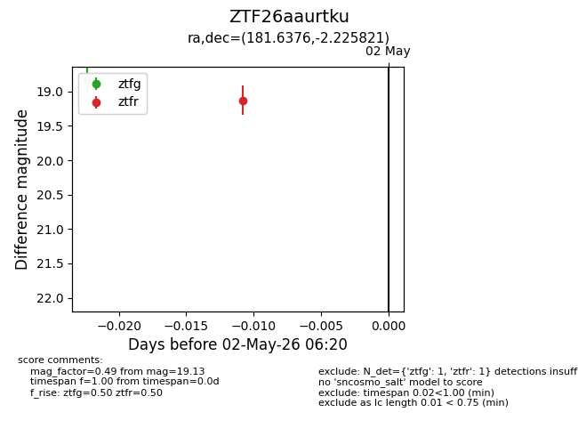
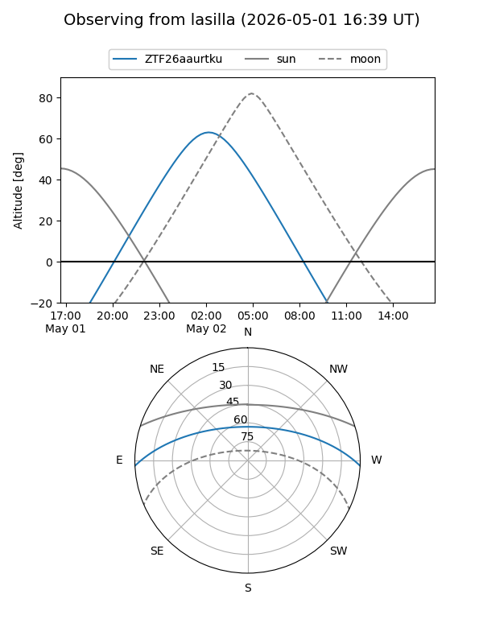
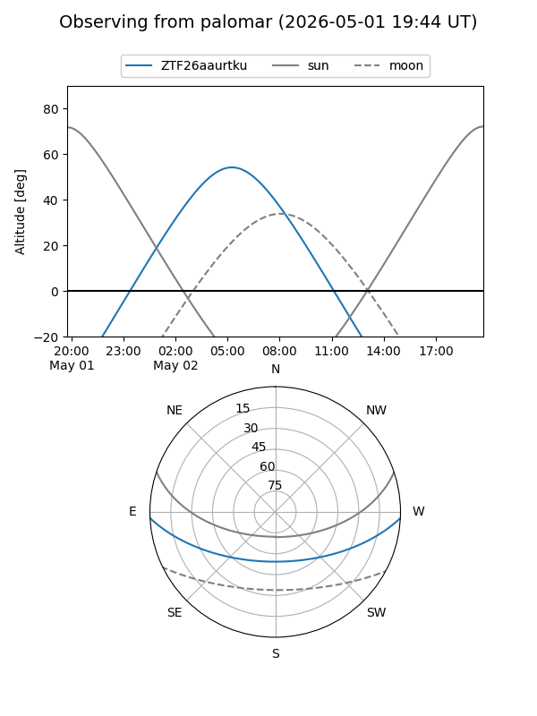

ZTF26aaurtku
Target ZTF26aaurtku at 2026-05-02 06:30
Aliases and brokers:
FINK: link
Lasair: link
ALeRCE: link
alt names
ZTF26aaurtku (ztf,fink_ztf)
Coordinates:
equatorial (ra, dec) = 181.6376,-2.22582
equatorial (HMS+DMS) = 12:06:33.02,-02:13:32.96
galactic (l, b) = (280.9395,+58.71603)
Flags:
Photometry:
last ztfg=18.84, ztfr=19.13
1 ztfg, 1 ztfr detections
Lightcurve

Visibility


Additional plots